C Programming
Introductions
C is a general-purpose programming language that is extremely popular, simple, and flexible to use. It is a structured programming language that is machine-independent and extensively used to write various applications, Operating Systems like Windows, and many other complex programs like Oracle database, Git, Python interpreter, and more.It is said that C is a god's programming language. One can say,C is a base for the programming. If you know C you can easily grasp the knowledge of the other programming languages that uses the concept of CIt is essential to have a background in computer memory mechanisms because it is an important aspect when dealing with the C programming language.
History of C
C programming language was developed in 1972 by Dennis Ritchie at bell laboratories of AT&T (American Telephone & Telegraph), located in the U.S.A. Dennis Ritchie is known as the founder of the c language. It was developed to overcome the problems of previous languages such as B, BCPL, etc.Initially, C language was developed to be used in UNIX operating system. It inherits many features of previous languages such as B and BCPL. Let's see the programming languages that were developed before C language.

How C Programming Language Works?
C is a compiled language. A compiler is a special tool that compiles the program and converts it into the
object
file which is machine readable. After the compilation process, the linker will combine different object
files
and creates a single executable file to run the program. The following diagram shows the execution of a 'C'
program
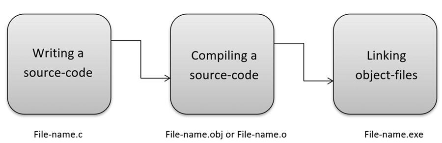
Nowadays, various compilers are available
online,
and you can use any of those compilers. The functionality will never differ and most of the compilers will
provide the features required to execute both 'C' programs.
Following is the list of popular compilers available online:
- Clang compiler
- MinGW compiler (Minimalist GNU for Windows)
- Portable 'C' compiler
- Turbo C
Basic Commands of C
Commands Explainations #include This command includes standard input output header file(stdio.h) from the C library before compiling a C program int main() It is the main function from where C program execution begins. { Indicates the beginning of the main function. /*_some_comments_*/ Whatever written inside this command “/* */” inside a C program, it will not be considered for compilation and execution. printf(“Hello_World! “); This command prints the output on the screen. getch(); This command is used for any character input from keyboard. return 0; This command is used to terminate a C program (main function) and it returns 0. } It is used to indicate the end of the main function
C Language Fundamentals
Token:
The smallest element identified bt compiler in a C program called as Token. It may be single character or sequence of charatcters.Genarally C Supports Six Types of Tokens:
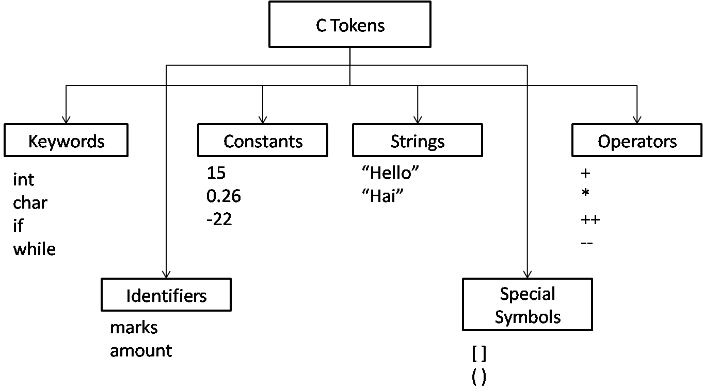1. Keywords: Keywords are predefined, reserved words used in programming that have special meanings to the compiler. Keywords are part of the syntax and they cannot be used as an identifier. As C is a case sensitive language, all keywords must be written in lowercase. Here is a list of all keywords allowed in ANSI C.
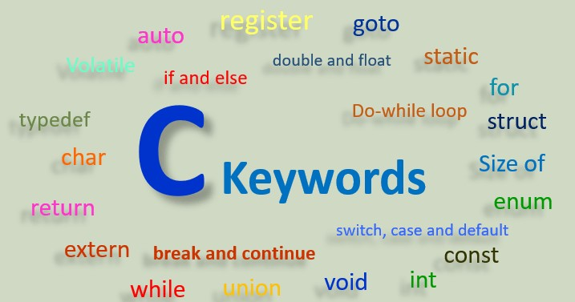2. Identifier: Identifiers are names given to different entities such as constants, variables, structures, functions, etc.
Example:
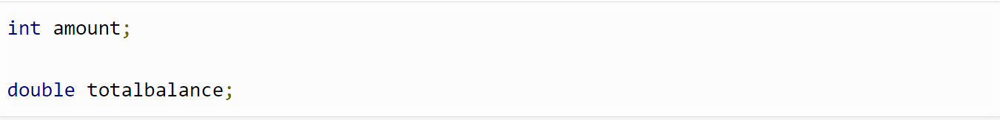In the above example, amount and totalbalance are identifiers and int, and double are keywords.
3. Constant: Constant are data values that never changes their values during progrm exacution.
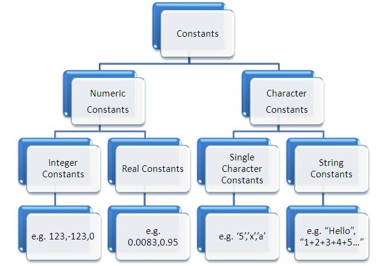4. String: String is a sequence of characters.In C strings are nothing but an array of characters ended with a null character ('\0').This null character indicates the end of the string. Strings are always enclosed in double quotes. Whereas, a character is enclosed in single quotes in C. Declarations for String:
- char string[20] = { 'f', 'o', 'r','g', 'e', 'e', 'k', 's','e', 'k', 's', 'g', 'e', '\0'};
- char string[20] = "Nusrat";
- char string [] = "Nusrat";
5. Special symbol:The following special symbols are used in C having some special meaning and thus, cannot be used for some other purpose.[] () {}, ; * = #
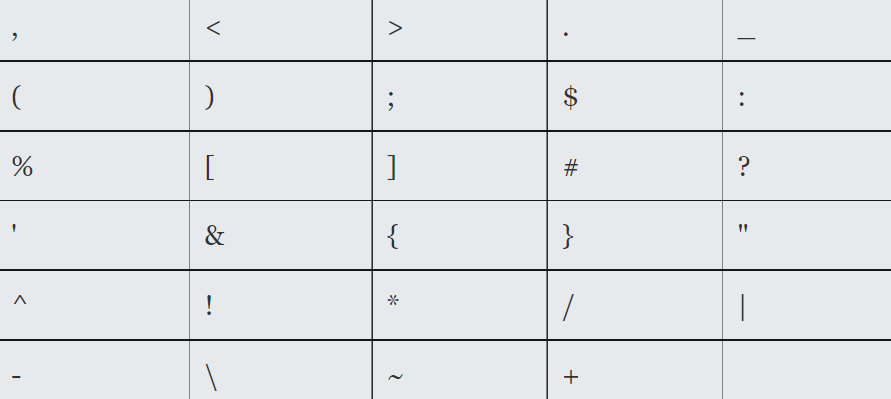6.Operators:An operator is a symbol that takes one or more arguments and operates on them to produce a result. Operators are of many types and are considered in operator chapter There are many types of operators in C which are given below:
- Unary Operator,
- Arithmetic Operator,
- shift Operator,
- Relational Operator,
- Bitwise Operator,
- Logical Operator,
- Ternary Operator and
- Assignment Operator.
C Data Types
A data type specifies the type of data that a variable can store such as integer, floating, character, etc. There are the following data types in C language.
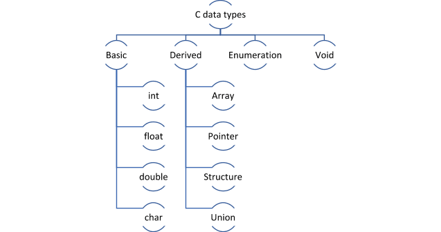
C Variables
Variables are memory locations(storage area) in the C programming language. Some rules in choosing Variables name:
- A variable name can consist of Capital letters A-Z, lowercase letters a-z, digits 0-9, and the underscore character.
- The first character must be a letter or underscore.
- Blank spaces cannot be used in variable names.
- Special characters like #, $ are not allowed.
- C keywords cannot be used as variable names.
- Variable names are case sensitive.
- Values of the variables can be numeric or alphabetic.
- Variable type can be char, int, float, double, or void.
syntex:
type variable_name;
Example:
int main()
{
int age =22; // c program to print value of a variable
printf("I am %d years old.\n", age);
}
C Program Structure
The example discussed above illustrates how a simple C program looks like and how the program segment works. A C program may contain one or more sections which are figured above.
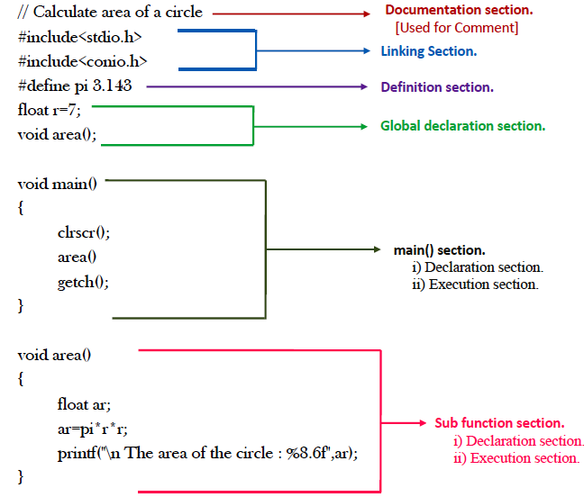
C if...else Statement
Programming language uses control statements to cause the flow of execution to advance and branch based on
changes to the state of a program.Selection statements (if-else, switch) allow your program to choose
different
paths of execution based upon the outcome of an expression or the state of a variable.
C supports various selection statements, like if, if-else and switch . These statements allow us to control
the
flow of our program's execution based upon conditions known only during run time.Many times, we need to
first
see the condition and then make a decision.
As an example, consider that a chocolate costs 10 rupees. So, if you have 10 rupees or more, you can buy
the
chocolate.
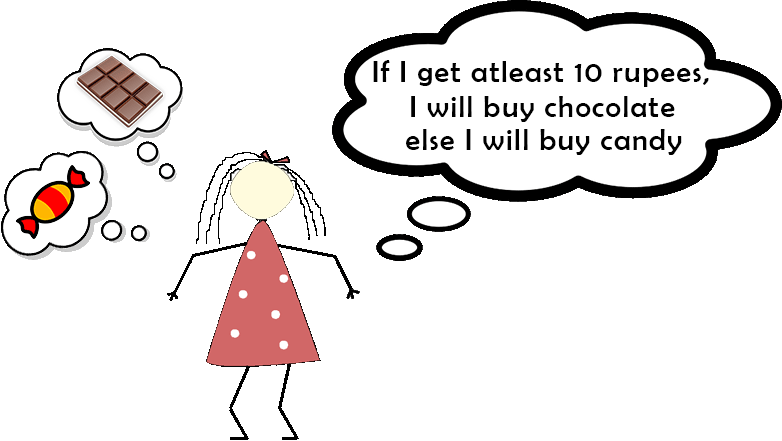
But how do we represent this scenario in C? This type of decision taking is done by using if statement in C.
This is a very simple code only to make you understand the use of if,else_if and else. There can be any
number
of else if between if and else.
C Loop
In programming, a loop is used to repeat a block of code until the specified condition is met.C programming has three types of loops:
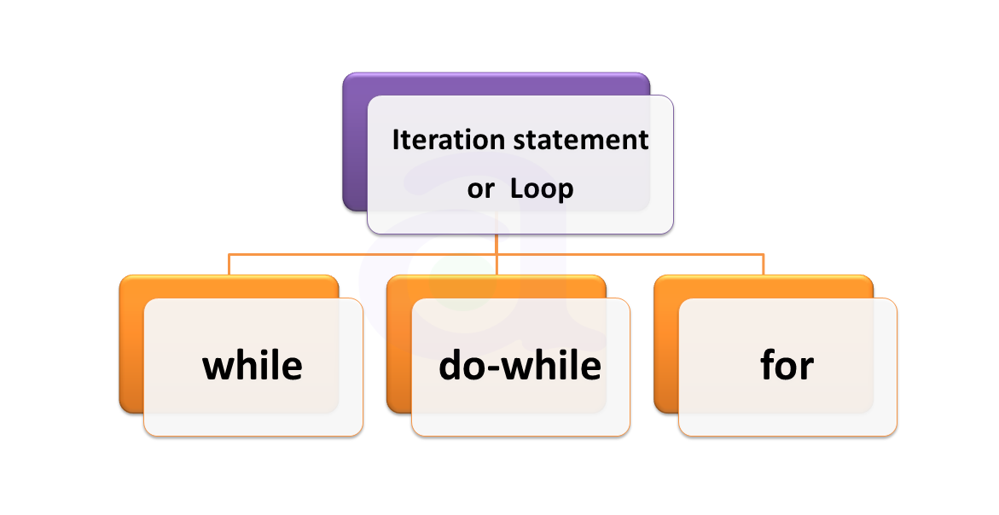For Loop: A for loop is a more efficient loop structure in 'C' programming. The general structure of for loop syntax in C is as follows:
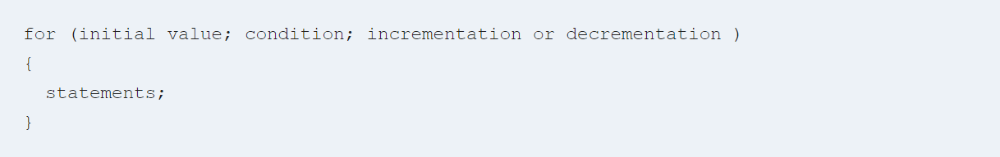Following program illustrates the for loop in C programming example:
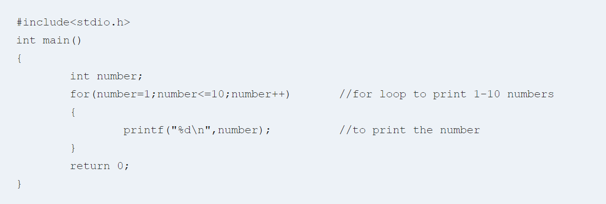Output:
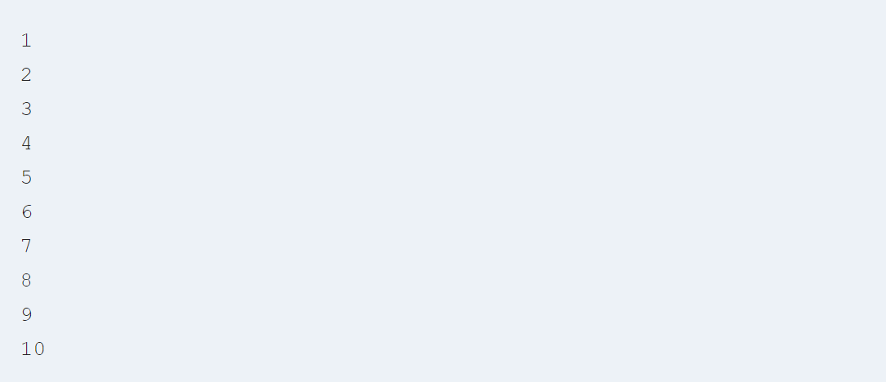While Loop: A while loop is the most straightforward looping structure. While loop syntax in C programming language is as follows: Syntax of while loop in C programming language is as follows:
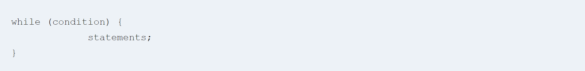Following program illustrates the while loop in C programming example:
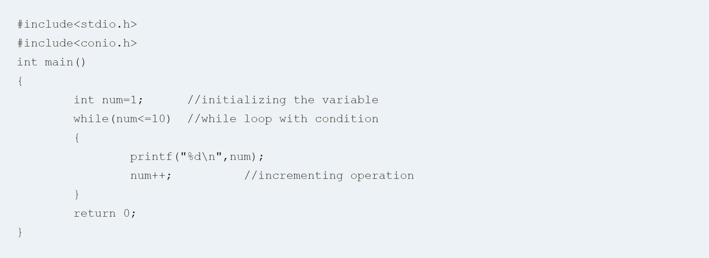Output:
Do while Loop: A do…while loop in C is similar to the while loop except that the condition is always executed after the body of a loop. It is also called an exit-controlled loop. Syntax of do while loop in C programming language is as follows:
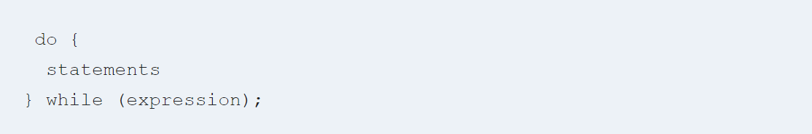Following program illustrates the do while loop in C programming example:
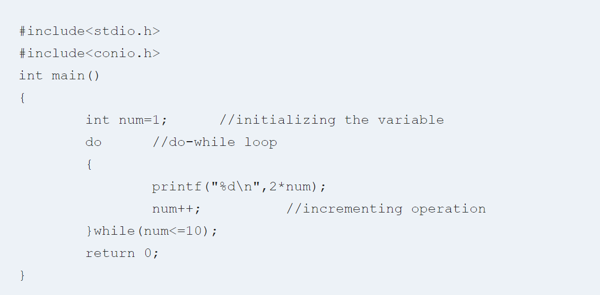Output:
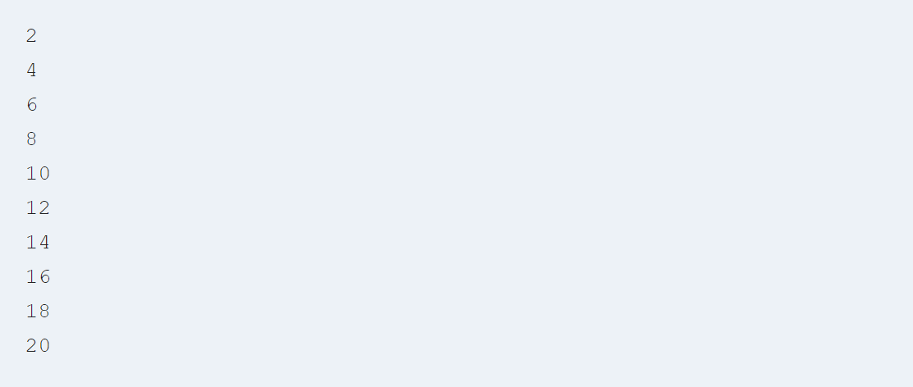C Arrays
An array is a variable that can store multiple values. For example, if you want to store 100 integers, you can create an array for it.
int data [100];

How to declare an array?
dataType arrayName[arraySize];
For example:
float mark[5];
Here, we declared an array,mark, of floating-point type. And its size is 5. Meaning, it can hold 5
floating-point values. It's important to note that the size and type of an array cannot be changed once it is declared.
How to initialize an array?
int data [5] = {19, 10, 8, 17, 9};
Here, we haven't specified the size. However, the compiler knows its size is 5 as we are initializing it with 5 elements.
C Function
C function is a self-contained block of statements that can be executed repeatedly whenever we need it.There are two types of function:
- Built-in(Library) Functions:
- The system provided these functions and stored in the library. Therefore it is also called Library Functions.e.g. scanf(), printf(), strcpy, strlwr, strcmp, strlen, strcat etc.
- To use these functions, you just need to include the appropriate C header files.
- User Defined Functions are defined by the user at the time of writing the program.
Parts of functions
- Function Prototype (function declaration)
- Function Definition
- Function Call
Program to illustrate the addition to two numbers using user defined functions:
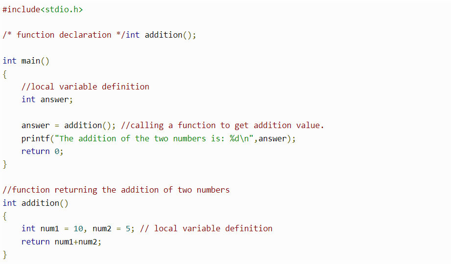